| 日付 | 2014年2月22日（土） |
|---|---|
| 山域 | 丹沢 |
| メンバー | 家族（妻、長女・2歳、長男・0歳） |
| 山行形態 | 子連れ日帰り |
| アクセス | 車、電車 |
| ルート (Map) | 震生湖 (8:56) - (10:56) 昼食休憩 (11:38) - (12:37) 頭高山 (12:55) - (14:06) 渋沢駅 |
一か月ぶりに山に出かける。
久しぶりの山行なのだが、行ける山は限定されている。
先週の大雪の影響で、標高の高い場所にはまだまだ雪が残っているのだ。
子供が歩くことを考えると、雪道は極力避けたい。
そこで今回選んだのが渋沢丘陵。
丹沢の南にある丘陵地帯であり、標高200～300mなので雪もあまりないだろう。
震生湖公園の駐車場に車を停める。標高160m。
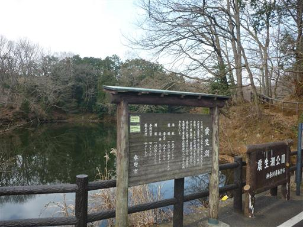
小さな駐車場には、トイレが併設されている。
主に釣り客やハイカーが車を停めている。
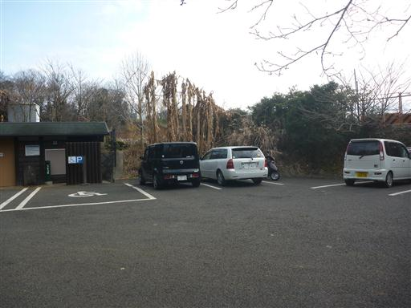
こちらが震生湖。関東大震災の時にできた湖で、日本で最も新しい自然湖らしい。
震生湖とはずいぶんと安直な名前だ。
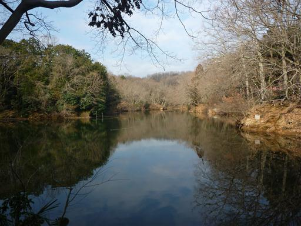
湖に架かる小さな橋を渡る。

釣り客用の桟橋がある。ヘラブナが釣れるようだ。
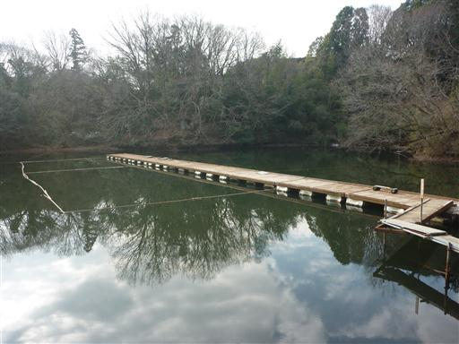
足元にドングリがたくさん落ちていて、その多くが地中に根を出している。
成長した自然のドングリを初めて見た。
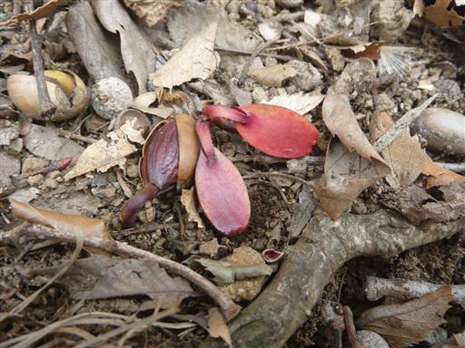
湖を右回りに歩いていく。
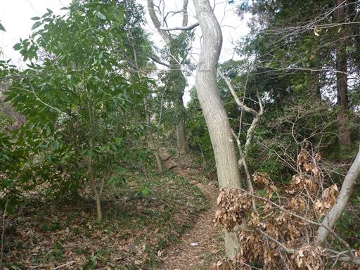
梅の木がたくさん植えられている。
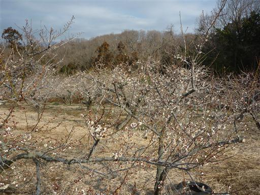
数は少ないが、いくつかはもう花を咲かせている。
まだまだ寒いが少しだけ春を感じられる。
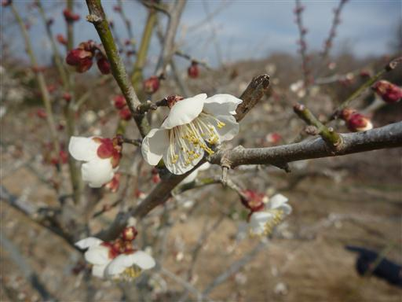
しばらく歩くと車道に出てきてしまう。湖畔道からは外れてしまったようだ。
しばらくは車道を歩いていく。
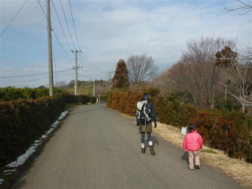
ミカン畑。収穫されていないのか、多くのミカンが地面に落ちている。
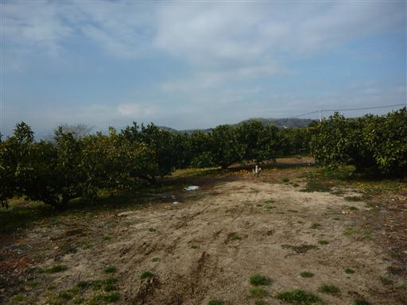
梅の花の向こう側に三角形の大山の姿が見える。
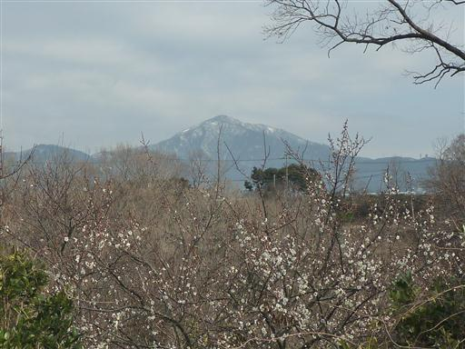
車道からは緩やかな丘陵地帯の美しい風景が広がる。
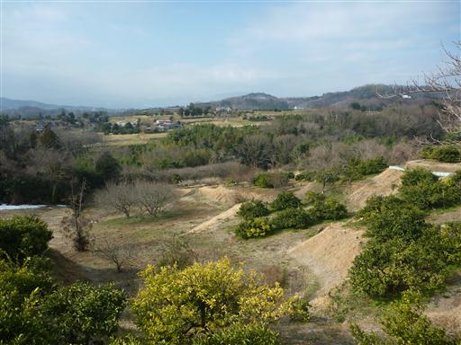
こちらは手入れのされていない梅の木。枝が伸び放題だ。
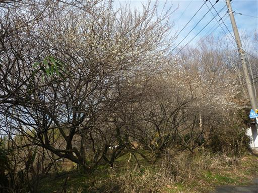
足元にホトケノザを見つける。今年初めて見つけた春の草花だ。
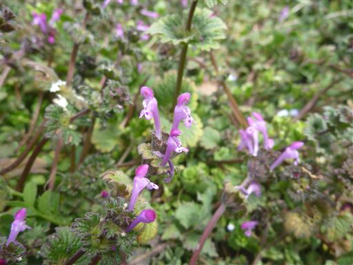
車通りの多い車道から外れて、細い車道に入っていく。
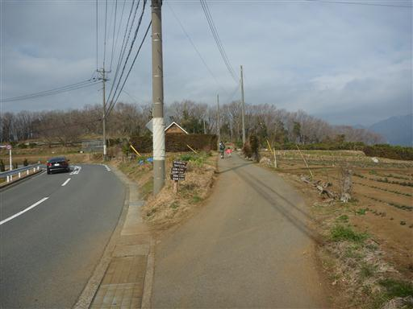
周囲は畑が広がっている。
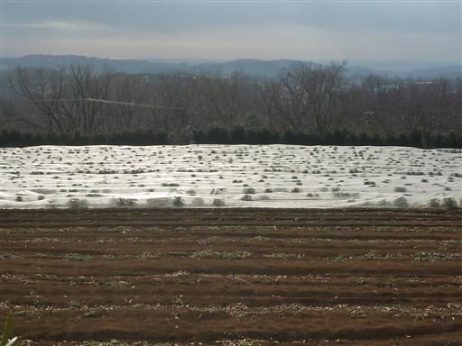
牛の飼育場。3～4頭の牛がいるだけで、人影はない。
あまり毛並みの良くなさそうな牛だ。
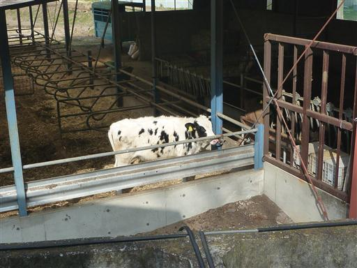
舗装路が終わり、農道を歩いていく。なかなか山道が現れない。
畑仕事をしているおじいさんと少し立ち話する。
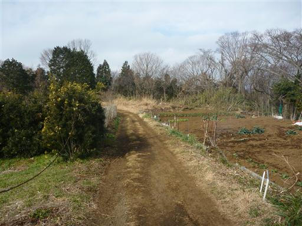
右手には丹沢山塊の山々を望むことができる。まだまだ多くの雪が積もってそうだ。
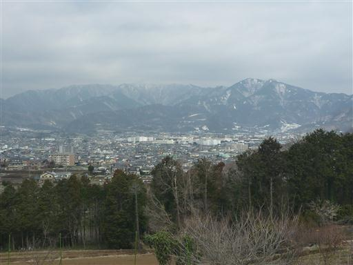
しばらく歩くと町に出てくる。
渋沢丘陵はそれなりに遊歩道が整備されているが、ほとんど自然は残っていない。
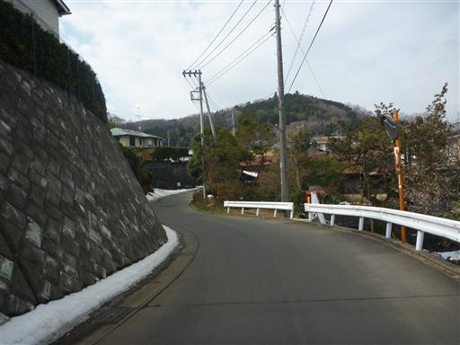
町を抜けると、ようやく少しだけ登山道が現れる。
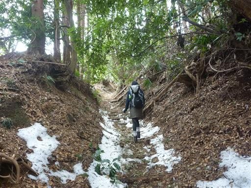
途中、明るく開けた場所があったので、ここで昼食休憩をとることにする。
今日はあまり天気が良くないが、日差しがあるとだいぶ暖かい。
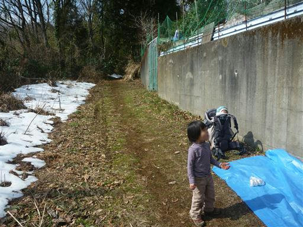
昼食をとったら歩を先に進める。道は再び畑沿いの車道になる。
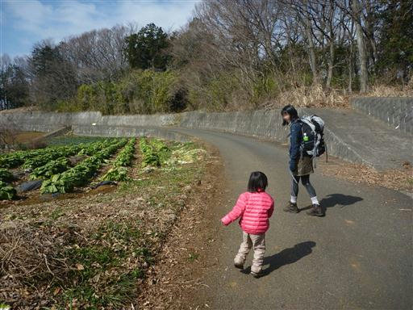
目の前には長閑な風景が広がる。
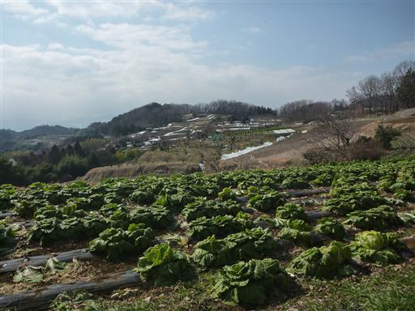
このまま車道を歩いて下山しても良かったのだが、山道らしい場所をほとんど歩いていないため
近くにある頭高山まで足を延ばすことにする。
登山道入口付近には美しい竹林が広がっている。
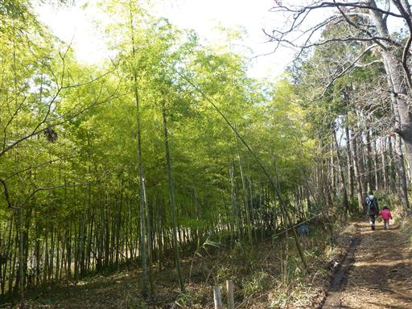
山頂直下。本日、唯一の登りらしい登りだ。
娘は眠くなってきたようで少しグズつき始める。
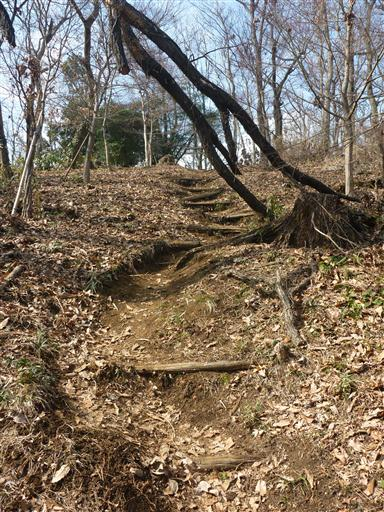
鳥居を潜ったら山頂だ。
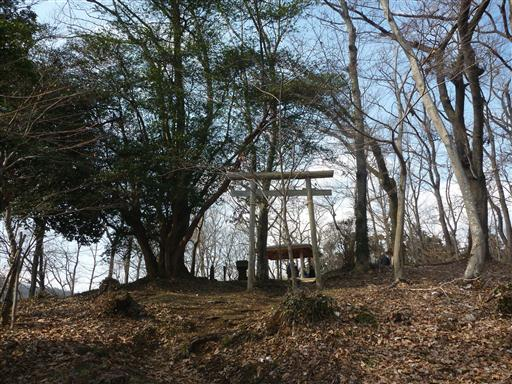
頭高山に到着。標高303m。
大して展望の開けない山頂だが、それなりに登山者がいる。

帰りはずっと車道歩き。道端に名水若竹の泉の標識があるが、
煮沸してから利用するように書かれている。
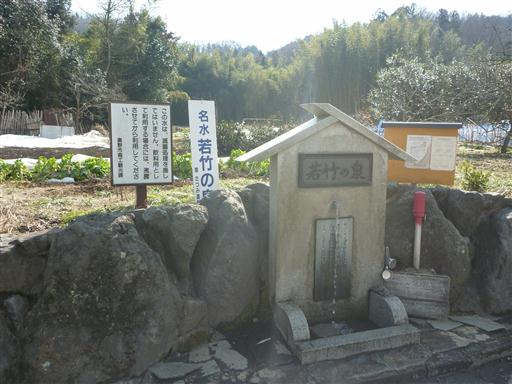
渋沢駅に到着。標高170m。
娘は最後かなり眠そうだったが、お菓子をあげつつ何とか歩いてもらった。
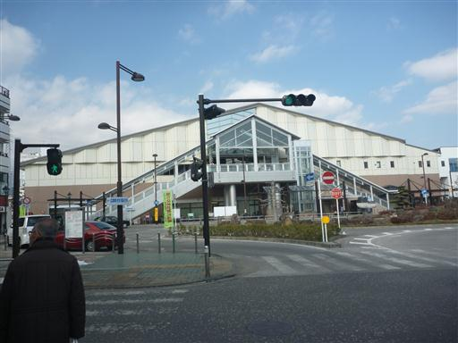
秦野駅まで電車で移動した後、自分一人で車を取りに行く。
震生湖の駐車場まで40分ほどだ。
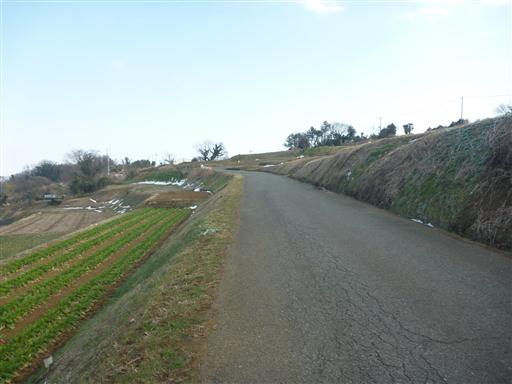
少し青空が出てきて丹沢山塊がきれいに見えている。
今日は比較的長い時間歩いたが、登山道らしいところがほとんど無くて少し不完全燃焼だった。
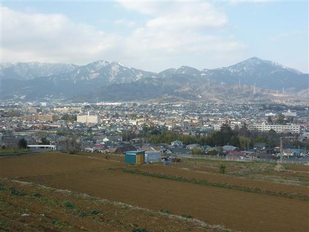